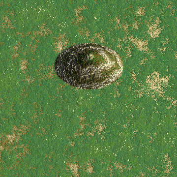
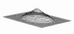
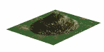
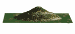
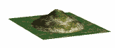
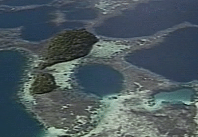
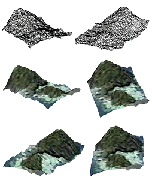
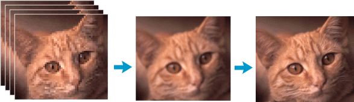
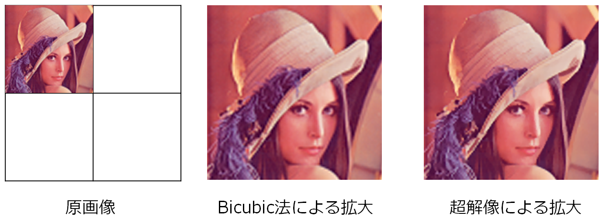
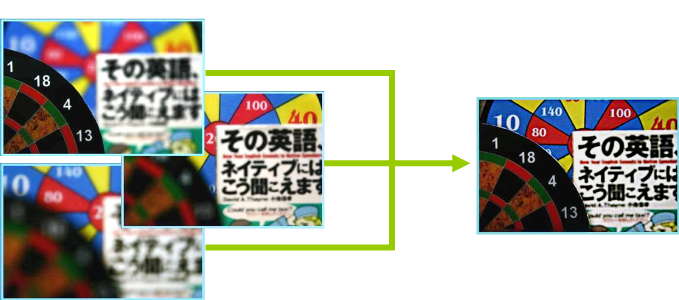

知的画像センシングプロジェクト／画像処理プロジェクト
最先端の画像処理手法を用いてカメラやビデオの画像センサから画像＋αの情報を獲得する技術を、本研究室では総称して知的画像センシングと呼んでいます。具体的には、低解像度画像から高解像度画像を生成する超解像、全ての場所に焦点があった画像を合成する全焦点画像生成、画像から被写体の形状や距離を生成するコンピュータビジョン、自動でぼけを補正するブラインド画像復元等の研究を行っています。
因子分解法と呼ばれる手法を用いて動画像 においての移動物体の三次元の形状を計算しています。また同時に 撮影したカメラの位置や姿勢などのデータも計算する ことができます。
|  |  |
|  | |
|  | |
|  | |
| 図１：CGを用いた実験例 |
|  |  |
| 図２：実データを用いた実験例 |
最近、画質改善、画像解析、画像認識等の問題を取り扱う画像処理の分野では大きなブレークスルーがおき、イメージングサイエンスと呼ばれる新分野が誕生して、従来と比較して驚くほど高度な画像処理が可能となりました。本研究室では、雑音除去、ぼけ画像復元、領域分割（セグメンテーション）、欠損修復（インペインティング）、動画像処理やステレオ視等の広範囲の問題を対象として、イメージングサイエンスの視点から様々なアルゴリズムを開発しています。
低解像度画像から高解像度画像を作成する研究です。この研究では画像の劣化過程を数式でモデル化して、低解像度画像の情報を元に高解像度画像を復元します。ここで、この劣化過程のモデルは二つに大別されています。それは、1枚の原画像から1つの劣化過程によって1枚の低解像度画像が生成されるとするSISO(Single Input Single Output)モデルと、1枚の原画像から複数の劣化過程によって複数枚の劣化画像が生成されるとするSIMO(Single Input Multiple Output)モデルです。当研究室では、これら両方の劣化過程モデルの側から、それぞれ超解像画像復元手法の研究・開発を行っています。
|  |
| 図３:超解像画像復元 |
一般的に知られる超解像は、同一の撮影対象を複数回撮影するなどして得た複数枚の画像を利用することで超解像に必要な情報を補います。一方、1枚の画像のみで超解像を行う場合には、失われた情報を画像に一般的に知られる先見情報で補います。本研究室では医用画像の分野で用いられている手法を一般画像に応用することで画像の復元を行なっています。従来手法では画像のエッジ部分がぼけてしまいがちでしたが、この手法は画像のエッジ部分を保存しつつ画像復元を行うことができます。
|  |
| 図４:1枚の画像のみの超解像画像復元 |
ぼけやぶれなどの劣化をした画像から劣化前の鮮明な画像を求める処理を画像復元と呼びます。単に輪郭をはっきりさせるなどの処理を施すのではなく、劣化画像がどの ような原画像からどのような劣化をしてできているのかを考慮して復元を行う処理であり、様々な原画像と劣化過程に対応することすることができます。しかし、１枚の 劣化過程からでは情報量が足りず、原画像と劣化過程の両方を復元することはできません。現在、当研究室ではSIMOモデル（1枚の原画像から複数の劣化過程によって複数枚 の劣化画像が生成されるモデル）を用いることで情報量を増やして復元を行う方法を考えています。さらには、応用事例として画像中の全ての点にピントが合っている全 焦点画像の生成に取り組んでいます。
|  |
| 図５:SIMOモデルによる画像復元を用いた全焦点画像の生成 |
Copyright © 2015 Image Science Lab. All rights Reserved.